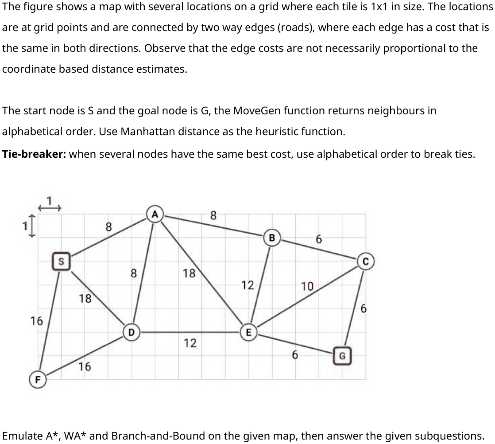
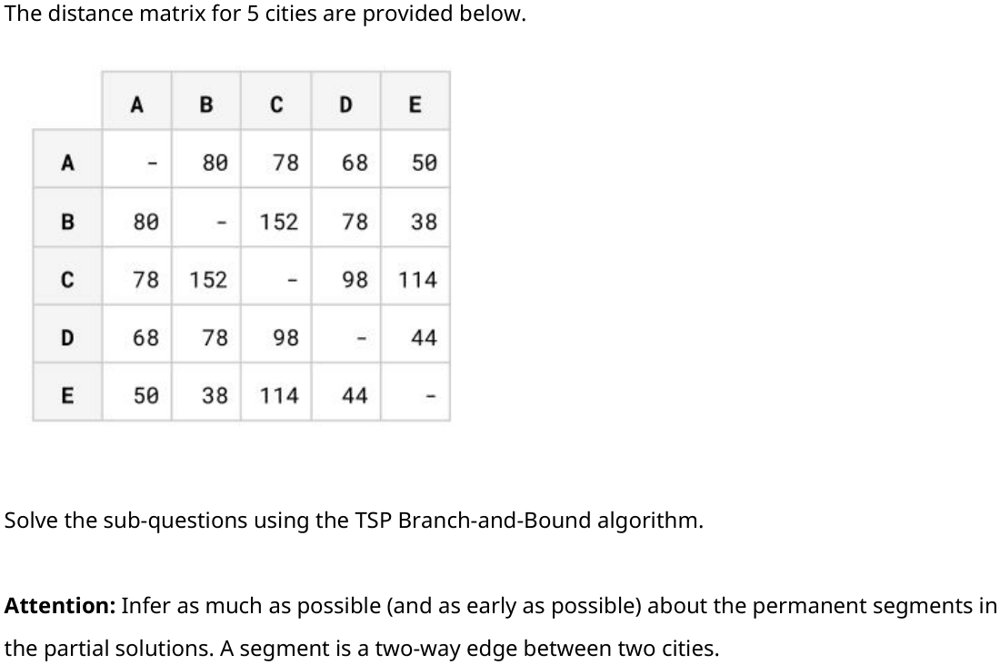
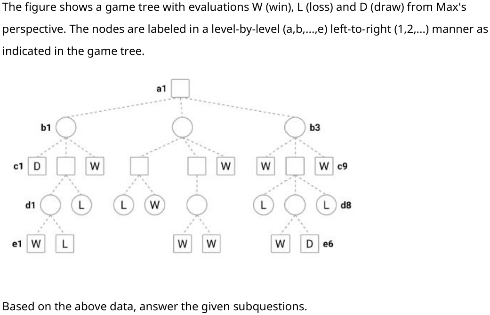
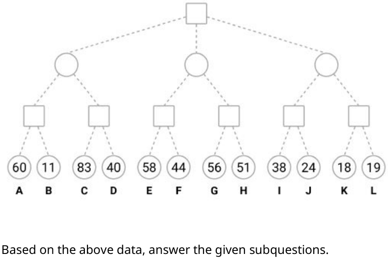
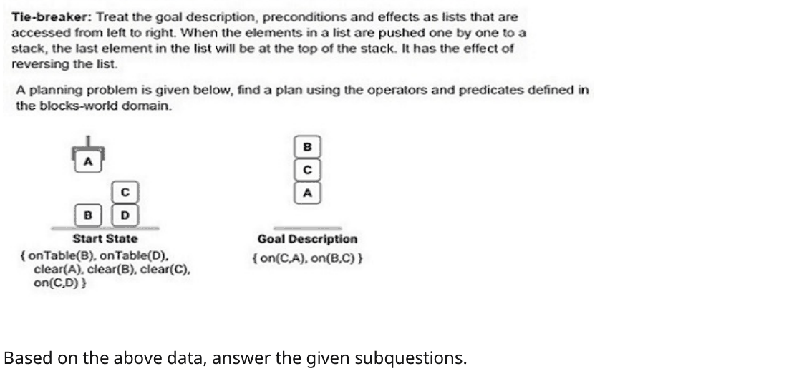

| Priority (lowest first) | Guarantee | |
|---|---|---|
| A* | f = g + h | optimal if h admissible (graph search also needs consistency, or re-opening) |
| WA* (w) | f = g + w·h | cost ≤ w × optimal if h admissible — not optimal in general |
| Branch & Bound | g only (h = 0) | always optimal (uniform-cost behaviour on positive costs) |
h is admissible iff h(n) ≤ h*(n) for every n, where h* is the true cheapest cost to G. To refute, find one violation. Fast hunt: look at G's neighbours first — if h(n) > cost(n→G) you are done. Manhattan distance is admissible only when every edge costs ≥ its grid length; the exam maps deliberately use cheap edges (cost 2 across 3 tiles, etc.) so the answer is almost always No.

| node | A | B | C | D | E | F | G | S |
|---|---|---|---|---|---|---|---|---|
| h | 14 | 8 | 5 | 10 | 5 | 14 | 0 | 16 |
| h* (true cost to G) | 20 | 12 | 6 | 18 | 6 | 34 | 0 | 28 |
h* is Dijkstra distance from G. A red h* means h > h* there, i.e. h over-estimates → inadmissible.
| # | refine | g | h | f=g+h | parent | children generated (↻ = cheaper parent found) | OPEN after (node f·parent) | CLOSED |
|---|---|---|---|---|---|---|---|---|
| 1 | S | 0 | 16 | 16 | – | A(g8,f22), D(g18,f28), F(g16,f30) | A22·S, D28·S, F30·S | S |
| 2 | A | 8 | 14 | 22 | S | B(g16,f24), E(g26,f31), D↻(g16,f26) | B24·A, D26·A, F30·S, E31·A | S, A |
| 3 | B | 16 | 8 | 24 | A | C(g22,f27) | D26·A, C27·B, F30·S, E31·A | S, A, B |
| 4 | D | 16 | 10 | 26 | A | none new | C27·B, F30·S, E31·A | S, A, B, D |
| 5 | C | 22 | 5 | 27 | B | G(g28,f28) | G28·C, F30·S, E31·A | S, A, B, D, C |
| 6 | G | 28 | 0 | 28 | C | GOAL ✔ | S, A, B, D, C, G |
| # | refine | g | h | f=g+3h | parent | children generated (↻ = cheaper parent found) | OPEN after (node f·parent) | CLOSED |
|---|---|---|---|---|---|---|---|---|
| 1 | S | 0 | 16 | 48 | – | A(g8,f50), D(g18,f48), F(g16,f58) | D48·S, A50·S, F58·S | S |
| 2 | D | 18 | 10 | 48 | S | E(g30,f45) | E45·D, A50·S, F58·S | S, D |
| 3 | E | 30 | 5 | 45 | D | B(g42,f66), C(g40,f55), G(g36,f36) | G36·E, A50·S, C55·E, F58·S, B66·E | S, D, E |
| 4 | G | 36 | 0 | 36 | E | GOAL ✔ | S, D, E, G |
| # | refine | g | h | f=g | parent | children generated (↻ = cheaper parent found) | OPEN after (node f·parent) | CLOSED |
|---|---|---|---|---|---|---|---|---|
| 1 | S | 0 | – | 0 | – | A(g8,f8), D(g18,f18), F(g16,f16) | A8·S, F16·S, D18·S | S |
| 2 | A | 8 | – | 8 | S | B(g16,f16), E(g26,f26), D↻(g16,f16) | B16·A, D16·A, F16·S, E26·A | S, A |
| 3 | B | 16 | – | 16 | A | C(g22,f22) | D16·A, F16·S, C22·B, E26·A | S, A, B |
| 4 | D | 16 | – | 16 | A | none new | F16·S, C22·B, E26·A | S, A, B, D |
| 5 | F | 16 | – | 16 | S | none new | C22·B, E26·A | S, A, B, D, F |
| 6 | C | 22 | – | 22 | B | G(g28,f28) | E26·A, G28·C | S, A, B, D, F, C |
| 7 | E | 26 | – | 26 | A | none new | G28·C | S, A, B, D, F, C, E |
| 8 | G | 28 | – | 28 | C | GOAL ✔ | S, A, B, D, F, C, E, G |
| Q | asks for | answer | key | why / how |
|---|---|---|---|---|
| Q1 | 2nd–4th nodes refined by A* | A,B,D | ✓ | refine order after S = pop order of OPEN by lowest f |
| Q2 | their f-values | 22,24,26 | ✓ | f = g + h of each refined node at the moment it is popped |
| Q3 | their parents | S,A,A | ✓ | parent pointer stored when the node was generated / last improved |
| Q4 | final A* path | S,A,B,C,G | ✓ | follow parent pointers back from G; cost 28 |
| Q5 | WA* (w=3) path | S,D,E,G | ✓ | w=3 inflates h, so the search dives toward G; cost 36 (optimal 28) |
| Q6 | BnB path cost | 28 | ✓ | BnB with h=0 expands in order of g, so the cost at which G is popped is the optimal cost |
| Q7 | Is h admissible? (A=Yes, B=No) | A | ✓ | no node has h > h* |
Root S0 = all tours. Pick the shortest undecided segment xy (tie → alphabetical). Child 1 = S0 + xy (include), child 2 = S0 + ~xy (exclude). Always refine the open node with the smallest lower bound; stop when the cheapest open node is a complete tour.
For each city take the two cheapest allowed edges (permanently-included edges are forced in; excluded ones are not allowed), sum over all cities, then divide by 2 (each segment is counted at both ends).
Counting tours in a node: after full inference, the number of Hamiltonian cycles that contain every included and avoid every excluded segment. (N cities → (N−1)!/2 tours in S0: 5→12, 6→60.) Included + excluded counts usually give the fastest sanity check: if included = N the node is a single tour.

| A | B | C | D | E | |
|---|---|---|---|---|---|
| A | · | 80 | 78 | 68 | 50 |
| B | 80 | · | 152 | 78 | 38 |
| C | 78 | 152 | · | 98 | 114 |
| D | 68 | 78 | 98 | · | 44 |
| E | 50 | 38 | 114 | 44 | · |
Sorted segments (cheapest first): BE38 < DE44 < AE50 < AD68 < AC78 < BD78 < AB80 < CD98 < CE114 < BC152
| city | two cheapest allowed segments | sum |
|---|---|---|
| A | AE=50 + AD=68 | 118 |
| B | BE=38 + BD=78 | 116 |
| C | AC=78 + CD=98 | 176 |
| D | DE=44 + AD=68 | 112 |
| E | BE=38 + DE=44 | 82 |
| Σ | 604 → ÷2 = 302 |
Each city contributes its two cheapest segments; halve the total because every segment is counted at both ends.
Given in node (S0,BE,~DE,AE): include BE, AE; exclude DE.
| # | because… | ⇒ |
|---|---|---|
| 1 | E already has 2 included segments (AE, BE) | exclude CE |
| 2 | path A–E–B would close into a sub-tour of 3 < 5 cities | exclude AB |
Rule chain (as taught) → included (2): AE, BE; excluded (3): AB, CE, DE.
Going further (enumerate the 2 surviving tour(s); anything common to all of them is forced) → included (3): AE, BE, CD; excluded (3): AB, CE, DE. Extra: include CD, exclude —. Where the two readings differ the key may accept either — see the answer sheet.
| city | two cheapest allowed segments | sum |
|---|---|---|
| A | AE=50 + AD=68 | 118 |
| B | BE=38 + BD=78 | 116 |
| C | CD=98 + AC=78 | 176 |
| D | CD=98 + AD=68 | 166 |
| E | BE=38 + AE=50 | 88 |
| Σ | 664 → ÷2 = 332 |
| tour | cost |
|---|---|
| ACDBEA | 342 |
| ADCBEA | 406 |
| Q | asks for | answer | key | why / how |
|---|---|---|---|---|
| Q8 | lower bound of S0 | 302 | ✓ | Σ(two cheapest segments per city) ÷ 2 — table above |
| Q9 | # permanently included segments | 3 (rule chain gives 2) | ✓ | included = given segments + everything the inference rules force |
| Q10 | # permanently excluded segments | 3 | ✓ | excluded = given ~segments + rule-1 (degree 2) / rule-3 (sub-tour) exclusions |
| Q11 | # tours in the node | 2 | ✓ | Hamiltonian cycles containing all included and none of the excluded segments |
| Q12 | cost (lower bound) of the node | 332 | ✓ | recompute the bound with the forced segments (tour list shows the real costs) |

Root value = W. Leaves of the best strategy (amber): c6, d4, e3, e4 — only these can change the root value, so the single-leaf change must be one of them.
| leaf | new value(s) that flip the root | check |
|---|---|---|
| c6 | D or L | re-run minimax → root changes |
| d4 | D or L | re-run minimax → root changes |
| e3 | D or L | re-run minimax → root changes |
| e4 | D or L | re-run minimax → root changes |
| Q | asks for | answer | key | why / how |
|---|---|---|---|---|
| Q13 | outcome with perfect play | W | ✓ | minimax from the leaves up |
| Q14 | change one leaf to change the outcome | c6,D (any of: c6,D; c6,L; d4,D; d4,L; e3,D; e3,L; e4,D; e4,L) | ✓ | only leaves of the best strategy can matter |
SSS* keeps an OPEN list of (node, status, h) ordered by h descending (an upper bound on the root value). Ties: newly inserted entries go in front of equal-h entries.
Initial cluster = the leaves that become SOLVED before any smaller h appears — first-descent of the tree, one leaf per MIN pair. Leaves SOLVED later are the ones listed in "SOLVED (other than initial)" questions. A pruned-from-queue SOLVED leaf is one removed by the purge step without ever being popped.

| node | cut | why | leaves pruned |
|---|---|---|---|
| MAX {C…D} | beta-cut after child 1 (value 83) | α=−∞, β=60 → value ≥ β | D |
| MIN {E…H} | alpha-cut after child 1 (value 58) | α=60, β=∞ → value ≤ α | G, H |
| MIN {I…L} | alpha-cut after child 1 (value 38) | α=60, β=∞ → value ≤ α | K, L |
| # | popped | pushed | purged | OPEN after |
|---|---|---|---|---|
| 1 | {A…L}.L.∞ | {A…D}.L.∞, {E…H}.L.∞, {I…L}.L.∞ | {A…D}.L.∞, {E…H}.L.∞, {I…L}.L.∞ | |
| 2 | {A…D}.L.∞ | {A…B}.L.∞ | {A…B}.L.∞, {E…H}.L.∞, {I…L}.L.∞ | |
| 3 | {A…B}.L.∞ | A.L.∞, B.L.∞ | A.L.∞, B.L.∞, {E…H}.L.∞, {I…L}.L.∞ | |
| 4 | A.L.∞ | A.S.60 | B.L.∞, {E…H}.L.∞, {I…L}.L.∞, A.S.60 | |
| 5 | B.L.∞ | B.S.11 | {E…H}.L.∞, {I…L}.L.∞, A.S.60, B.S.11 | |
| 6 | {E…H}.L.∞ | {E…F}.L.∞ | {E…F}.L.∞, {I…L}.L.∞, A.S.60, B.S.11 | |
| 7 | {E…F}.L.∞ | E.L.∞, F.L.∞ | E.L.∞, F.L.∞, {I…L}.L.∞, A.S.60, B.S.11 | |
| 8 | E.L.∞ | E.S.58 | F.L.∞, {I…L}.L.∞, A.S.60, E.S.58, B.S.11 | |
| 9 | F.L.∞ | F.S.44 | {I…L}.L.∞, A.S.60, E.S.58, F.S.44, B.S.11 | |
| 10 | {I…L}.L.∞ | {I…J}.L.∞ | {I…J}.L.∞, A.S.60, E.S.58, F.S.44, B.S.11 | |
| 11 | {I…J}.L.∞ | I.L.∞, J.L.∞ | I.L.∞, J.L.∞, A.S.60, E.S.58, F.S.44, B.S.11 | |
| 12 | I.L.∞ | I.S.38 | J.L.∞, A.S.60, E.S.58, F.S.44, I.S.38, B.S.11 | |
| 13 | J.L.∞ | J.S.24 | A.S.60, E.S.58, F.S.44, I.S.38, J.S.24, B.S.11 | |
| 14 | A.S.60 | {A…B}.S.60 | B.S.11 | {A…B}.S.60, E.S.58, F.S.44, I.S.38, J.S.24 |
| 15 | {A…B}.S.60 | {C…D}.L.60 | {C…D}.L.60, E.S.58, F.S.44, I.S.38, J.S.24 | |
| 16 | {C…D}.L.60 | C.L.60, D.L.60 | C.L.60, D.L.60, E.S.58, F.S.44, I.S.38, J.S.24 | |
| 17 | C.L.60 | C.S.60 | C.S.60, D.L.60, E.S.58, F.S.44, I.S.38, J.S.24 | |
| 18 | C.S.60 | {C…D}.S.60 | D.L.60 | {C…D}.S.60, E.S.58, F.S.44, I.S.38, J.S.24 |
| 19 | {C…D}.S.60 | {A…D}.S.60 | {A…D}.S.60, E.S.58, F.S.44, I.S.38, J.S.24 | |
| 20 | {A…D}.S.60 | {A…L}.S.60 | E.S.58, F.S.44, I.S.38, J.S.24 | {A…L}.S.60 |
| 21 | {A…L}.S.60 | — | DONE: root value 60 |
Initial cluster (leaves SOLVED on the first dive, h = ∞): A, B, E, F, I, J. Leaves SOLVED later: C. SOLVED leaves purged without being popped: B, E, F, I, J.
| Q | asks for | answer | key | why / how |
|---|---|---|---|---|
| Q15 | horizon nodes of the best strategy | A,C | ✓ | MAX takes its best child, MIN keeps both children |
| Q16 | horizon nodes pruned by Alpha-Beta | D,G,H,K,L | ✓ | leaves under a cut, in left-to-right search |
| Q17 | initial cluster of SSS* | A,B,E,F,I,J | ✓ | first dive: first leaf below every MIN node reached via all MAX alternatives |
| Q18 | all horizon nodes that get SOLVED status | A,B,C,E,F,I,J | ✓ | initial cluster + leaves solved later (every leaf that ever reaches SOLVED, popped or not) |
| Action | Pre | Add | Delete |
|---|---|---|---|
| Pickup(x) | armEmpty, clear(x), onTable(x) | holding(x) | armEmpty, onTable(x) |
| Putdown(x) | holding(x) | armEmpty, onTable(x) | holding(x) |
| Unstack(x,y) | armEmpty, clear(x), on(x,y) | holding(x), clear(y) | armEmpty, on(x,y) |
| Stack(x,y) | holding(x), clear(y) | armEmpty, on(x,y) | holding(x), clear(y) |
Applicable (start state): all preconditions already true → check each against the start facts. Relevant (goal): the action adds at least one goal literal.
Optimal plan = BFS over states (shortest action sequence). GSP is not guaranteed optimal; swapping the order of goal literals can make it optimal or not — compute both orders, compare to BFS length.

| action | preconditions | status |
|---|---|---|
| Putdown(A) | holding(A) | ✔ all true now |
| Stack(A,B) | holding(A), clear(B) | ✔ all true now |
| Stack(A,C) | holding(A), clear(C) | ✔ all true now |
Relevant to the goal (action adds a goal literal): Stack(B,C), Stack(C,A).
| # | top of stack | step | stack (top → bottom) |
|---|---|---|---|
| 1 | {on(C,A), on(B,C)} | push compound goal's literals | {on(C,A), on(B,C)} |
| 2 | on(B,C) | choose Stack(B,C) to achieve it | on(B,C) | on(C,A) | {on(C,A), on(B,C)} |
| 3 | clear(C) | already true → pop | clear(C) | holding(B) | {holding(B), clear(C)} | Stack(B,C) | on(C,A) | … |
| 4 | holding(B) | choose Pickup(B) to achieve it | holding(B) | {holding(B), clear(C)} | Stack(B,C) | on(C,A) | {on(C,A), on(B,C)} |
| 5 | onTable(B) | already true → pop | onTable(B) | clear(B) | armEmpty | {armEmpty, clear(B), onTable(B)} | Pickup(B) | … |
| 6 | clear(B) | already true → pop | clear(B) | armEmpty | {armEmpty, clear(B), onTable(B)} | Pickup(B) | {holding(B), clear(C)} | … |
| 7 | armEmpty | choose Putdown(A) to achieve it | armEmpty | {armEmpty, clear(B), onTable(B)} | Pickup(B) | {holding(B), clear(C)} | Stack(B,C) | … |
| 8 | holding(A) | already true → pop | holding(A) | {holding(A)} | Putdown(A) | {armEmpty, clear(B), onTable(B)} | Pickup(B) | … |
| 9 | {holding(A)} | compound goal satisfied → pop | {holding(A)} | Putdown(A) | {armEmpty, clear(B), onTable(B)} | Pickup(B) | {holding(B), clear(C)} | … |
| 10 | Putdown(A) | execute → append to plan | Putdown(A) | {armEmpty, clear(B), onTable(B)} | Pickup(B) | {holding(B), clear(C)} | Stack(B,C) | … |
| 11 | {armEmpty, clear(B), onTable(B)} | compound goal satisfied → pop | {armEmpty, clear(B), onTable(B)} | Pickup(B) | {holding(B), clear(C)} | Stack(B,C) | on(C,A) | … |
| 12 | Pickup(B) | execute → append to plan | Pickup(B) | {holding(B), clear(C)} | Stack(B,C) | on(C,A) | {on(C,A), on(B,C)} |
| 13 | {holding(B), clear(C)} | compound goal satisfied → pop | {holding(B), clear(C)} | Stack(B,C) | on(C,A) | {on(C,A), on(B,C)} |
| 14 | Stack(B,C) | execute → append to plan | Stack(B,C) | on(C,A) | {on(C,A), on(B,C)} |
| 15 | on(C,A) | choose Stack(C,A) to achieve it | on(C,A) | {on(C,A), on(B,C)} |
| 16 | clear(A) | already true → pop | clear(A) | holding(C) | {holding(C), clear(A)} | Stack(C,A) | {on(C,A), on(B,C)} |
| 17 | holding(C) | choose Unstack(C,D) to achieve it | holding(C) | {holding(C), clear(A)} | Stack(C,A) | {on(C,A), on(B,C)} |
| 18 | on(C,D) | already true → pop | on(C,D) | clear(C) | armEmpty | {armEmpty, clear(C), on(C,D)} | Unstack(C,D) | … |
| 19 | clear(C) | choose Unstack(B,C) to achieve it | clear(C) | armEmpty | {armEmpty, clear(C), on(C,D)} | Unstack(C,D) | {holding(C), clear(A)} | … |
| 20 | on(B,C) | already true → pop | on(B,C) | clear(B) | armEmpty | {armEmpty, clear(B), on(B,C)} | Unstack(B,C) | … |
| 21 | clear(B) | already true → pop | clear(B) | armEmpty | {armEmpty, clear(B), on(B,C)} | Unstack(B,C) | armEmpty | … |
| 22 | armEmpty | already true → pop | armEmpty | {armEmpty, clear(B), on(B,C)} | Unstack(B,C) | armEmpty | {armEmpty, clear(C), on(C,D)} | … |
| 23 | {armEmpty, clear(B), on(B,C)} | compound goal satisfied → pop | {armEmpty, clear(B), on(B,C)} | Unstack(B,C) | armEmpty | {armEmpty, clear(C), on(C,D)} | Unstack(C,D) | … |
| 24 | Unstack(B,C) | execute → append to plan | Unstack(B,C) | armEmpty | {armEmpty, clear(C), on(C,D)} | Unstack(C,D) | {holding(C), clear(A)} | … |
| 25 | armEmpty | choose Putdown(B) to achieve it | armEmpty | {armEmpty, clear(C), on(C,D)} | Unstack(C,D) | {holding(C), clear(A)} | Stack(C,A) | … |
| 26 | holding(B) | already true → pop | holding(B) | {holding(B)} | Putdown(B) | {armEmpty, clear(C), on(C,D)} | Unstack(C,D) | … |
| 27 | {holding(B)} | compound goal satisfied → pop | {holding(B)} | Putdown(B) | {armEmpty, clear(C), on(C,D)} | Unstack(C,D) | {holding(C), clear(A)} | … |
| 28 | Putdown(B) | execute → append to plan | Putdown(B) | {armEmpty, clear(C), on(C,D)} | Unstack(C,D) | {holding(C), clear(A)} | Stack(C,A) | … |
| 29 | {armEmpty, clear(C), on(C,D)} | compound goal satisfied → pop | {armEmpty, clear(C), on(C,D)} | Unstack(C,D) | {holding(C), clear(A)} | Stack(C,A) | {on(C,A), on(B,C)} |
| 30 | Unstack(C,D) | execute → append to plan | Unstack(C,D) | {holding(C), clear(A)} | Stack(C,A) | {on(C,A), on(B,C)} |
| 31 | {holding(C), clear(A)} | compound goal satisfied → pop | {holding(C), clear(A)} | Stack(C,A) | {on(C,A), on(B,C)} |
| 32 | Stack(C,A) | execute → append to plan | Stack(C,A) | {on(C,A), on(B,C)} |
| 33 | {on(C,A), on(B,C)} | push compound goal's literals | {on(C,A), on(B,C)} |
| 34 | on(B,C) | choose Stack(B,C) to achieve it | on(B,C) | on(C,A) | {on(C,A), on(B,C)} |
| 35 | clear(C) | already true → pop | clear(C) | holding(B) | {holding(B), clear(C)} | Stack(B,C) | on(C,A) | … |
| 36 | holding(B) | choose Pickup(B) to achieve it | holding(B) | {holding(B), clear(C)} | Stack(B,C) | on(C,A) | {on(C,A), on(B,C)} |
| 37 | onTable(B) | already true → pop | onTable(B) | clear(B) | armEmpty | {armEmpty, clear(B), onTable(B)} | Pickup(B) | … |
| 38 | clear(B) | already true → pop | clear(B) | armEmpty | {armEmpty, clear(B), onTable(B)} | Pickup(B) | {holding(B), clear(C)} | … |
| 39 | armEmpty | already true → pop | armEmpty | {armEmpty, clear(B), onTable(B)} | Pickup(B) | {holding(B), clear(C)} | Stack(B,C) | … |
| 40 | {armEmpty, clear(B), onTable(B)} | compound goal satisfied → pop | {armEmpty, clear(B), onTable(B)} | Pickup(B) | {holding(B), clear(C)} | Stack(B,C) | on(C,A) | … |
| 41 | Pickup(B) | execute → append to plan | Pickup(B) | {holding(B), clear(C)} | Stack(B,C) | on(C,A) | {on(C,A), on(B,C)} |
| 42 | {holding(B), clear(C)} | compound goal satisfied → pop | {holding(B), clear(C)} | Stack(B,C) | on(C,A) | {on(C,A), on(B,C)} |
| 43 | Stack(B,C) | execute → append to plan | Stack(B,C) | on(C,A) | {on(C,A), on(B,C)} |
| 44 | on(C,A) | already true → pop | on(C,A) | {on(C,A), on(B,C)} |
| 45 | {on(C,A), on(B,C)} | compound goal satisfied → pop | {on(C,A), on(B,C)} |
Goal order reversed (on(B,C), on(C,A)): GSP gives 5 actions vs optimal 5 → optimal. Original order: not optimal (9 vs 5).
| Q | asks for | answer | key | why / how |
|---|---|---|---|---|
| Q19 | length of the optimal plan | 5 | ✓ | BFS over states; shortest action sequence |
| Q20 | applicable actions | BCD | ✓ | all preconditions hold in the start state |
| Q21 | relevant actions | DE | ✓ | adds at least one goal literal |
| Q22 | first four elements pushed | C | ✓ | bottom → top: the compound goal, then its literals in listed order (last literal on top) |
| Q23 | first action popped (executed) | A = Putdown(A) | ✓ | first action whose preconditions are all satisfied after the pushes |
| Q24 | does GSP find an optimal plan? (A=Yes, B=No) | B | ✓ | GSP 9 vs optimal 5 |
| Q25 | after swapping goal order, is GSP optimal? (A=Yes, B=No) | A | ✓ | reversed order gives 5 vs optimal 5 |